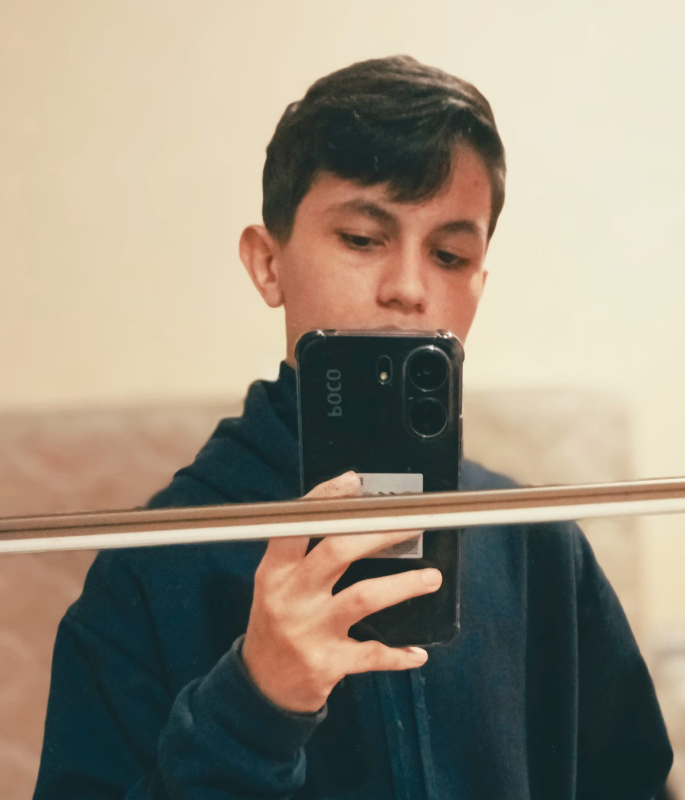
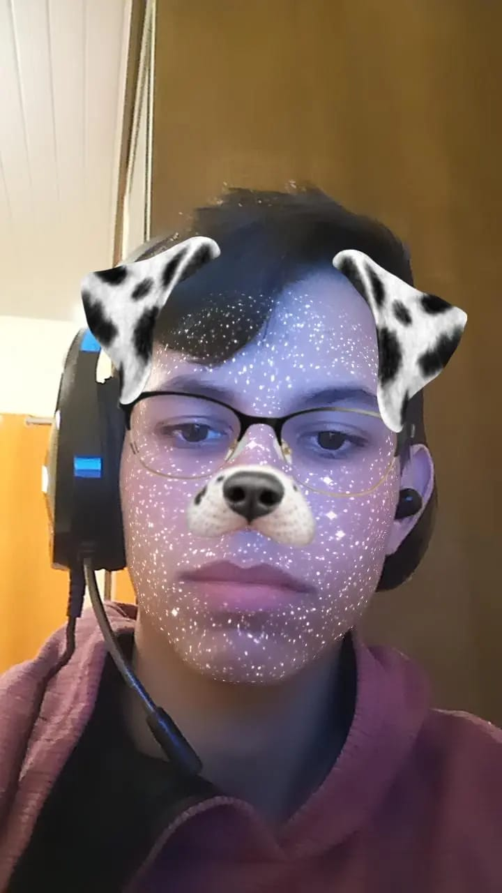

Este Site a Função de Ser o portifolho Pessoal de:
Mario Gonçalves de Freitas Junior
Quem sou
Eu sou um adorador de programar, tenho diversos coisas que faço como divertimento nas horas vagas como comer,correr,jogar e programar
Minhas informações
O que eu gosto:
- De Programar
- De Dormir
- De Comer
- De ser Simples

Meus Conhecimentos:
- HTML (Em Aprendizagem)
- CSS (Em Aprendizagem)
- Java Script (Em Aprendizagem)
- Python (Em Aprendizagem)
- PHP (Em Aprendizagem)
Meus Projetos:
- Projeto integrador (Em progresso)
- Projeto Minecraft Senac (Em progresso)
- Um jogo sobre história da humanidade (Futuramente)
- Um sistema capaz de integrar computadores e celulares em diversos processos (Futuramente)
- Uma IA de gerar codigos (Futuramente)

Minha Redes Sociais